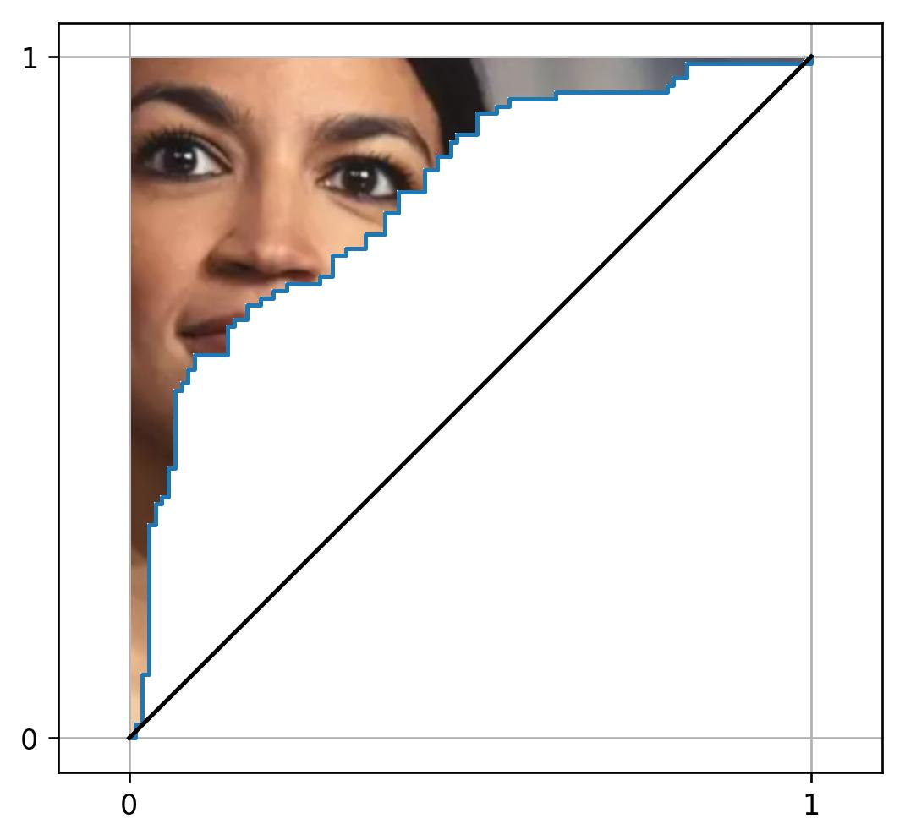

Rows: 235,685
Columns: 59
$ squirrels <fct> no squirrels, no squirrels, no squirrels,…
$ yard_type_pavement <dbl> 0, 0, 0, 0, 0, 0, 0, 0, 0, 0, 0, 0, 0, 0,…
$ yard_type_garden <dbl> 0, 0, 0, 0, 0, 0, 0, 0, 0, 0, 0, 0, 0, 0,…
$ yard_type_landsca <dbl> 1, 1, 1, 1, 1, 1, 0, 0, 0, 0, 1, 1, 1, 1,…
$ yard_type_woods <dbl> 0, 0, 0, 0, 0, 0, 1, 1, 1, 1, 1, 1, 1, 1,…
$ yard_type_desert <dbl> 0, 0, 0, 0, 0, 0, 0, 0, 0, 0, 0, 0, 0, 0,…
$ hab_dcid_woods <dbl> 1, 1, 1, 1, 1, 1, 1, 1, 1, 1, NA, NA, NA,…
$ hab_evgr_woods <dbl> NA, NA, NA, NA, 0, 0, NA, NA, NA, NA, NA,…
$ hab_mixed_woods <dbl> 1, 1, 1, 1, 1, 1, NA, NA, NA, NA, 1, 1, 1…
$ hab_orchard <dbl> NA, NA, NA, NA, 0, 0, NA, NA, NA, NA, NA,…
$ hab_park <dbl> NA, NA, NA, NA, 0, 0, NA, NA, NA, NA, 1, …
$ hab_water_fresh <dbl> 1, 1, 1, 1, 1, 1, 1, 1, 1, 1, 1, 1, 1, 1,…
$ hab_water_salt <dbl> NA, NA, NA, NA, 0, 0, NA, NA, NA, NA, 1, …
$ hab_residential <dbl> 1, 1, 1, 1, 1, 1, NA, NA, NA, NA, 1, 1, 1…
$ hab_industrial <dbl> NA, NA, NA, NA, 0, 0, NA, NA, NA, NA, 1, …
$ hab_agricultural <dbl> 1, 1, 1, 1, 1, 1, NA, NA, NA, NA, 1, 1, 1…
$ hab_desert_scrub <dbl> NA, NA, NA, NA, 0, 0, NA, NA, NA, NA, NA,…
$ hab_young_woods <dbl> NA, NA, NA, NA, 0, 0, NA, NA, NA, NA, NA,…
$ hab_swamp <dbl> NA, NA, NA, NA, 0, 0, NA, NA, NA, NA, NA,…
$ hab_marsh <dbl> 1, 1, 1, 1, 1, 1, NA, NA, NA, NA, 1, 1, 1…
$ evgr_trees_atleast <dbl> 11, 11, 11, 11, 11, 11, 0, 0, 0, 4, 1, 1,…
$ evgr_shrbs_atleast <dbl> 4, 4, 4, 4, 1, 1, 1, 1, 1, 1, 4, 4, 4, 4,…
$ dcid_trees_atleast <dbl> 11, 11, 11, 11, 1, 1, 11, 11, 11, 11, 4, …
$ dcid_shrbs_atleast <dbl> 4, 4, 4, 4, 4, 4, 11, 11, 11, 11, 4, 4, 4…
$ fru_trees_atleast <dbl> 4, 4, 4, 4, 1, 1, 1, 1, 1, 1, 1, 1, 1, 1,…
$ cacti_atleast <dbl> 0, 0, 0, 0, 0, 0, 0, 0, 0, 0, 0, 0, 0, 0,…
$ brsh_piles_atleast <dbl> 0, 0, 0, 0, 0, 0, 1, 1, 1, 1, 1, 1, 1, 1,…
$ water_srcs_atleast <dbl> 1, 1, 1, 1, 1, 1, 0, 0, 0, 0, 0, 0, 0, 0,…
$ bird_baths_atleast <dbl> 0, 0, 0, 0, 0, 0, 1, 1, 1, 1, 0, 0, 0, 1,…
$ nearby_feeders <dbl> 0, 1, 1, 1, 0, 0, 1, 0, 1, 1, 1, 1, 1, 1,…
$ cats <dbl> 0, 1, 1, 1, 1, 1, 1, 0, 0, 0, 1, 1, 1, 1,…
$ dogs <dbl> 0, 0, 0, 0, 0, 0, 1, 0, 0, 0, 1, 1, 1, 1,…
$ humans <dbl> 0, 0, 0, 0, 0, 1, 1, 1, 0, 1, 1, 1, 1, 1,…
$ housing_density <dbl> 2, 2, 2, 2, 2, 2, 1, 1, 1, 1, 2, 2, 2, 2,…
$ fed_in_jan <dbl> 1, 1, 1, 1, 1, 1, 1, 1, 1, 1, 1, NA, 1, N…
$ fed_in_feb <dbl> 1, 1, 1, 1, 1, 1, 1, 1, 1, 1, 1, NA, 1, N…
$ fed_in_mar <dbl> 1, 1, 1, 1, 1, 1, 1, 1, 1, 1, 1, NA, 1, N…
$ fed_in_apr <dbl> 1, 1, 1, 1, 1, 0, 1, 1, 1, 1, 1, NA, 0, N…
$ fed_in_may <dbl> 0, 0, 0, 0, 0, 0, 1, 1, 1, 1, 0, NA, 0, N…
$ fed_in_jun <dbl> 0, 0, 0, 0, 0, 0, 1, 1, 1, 1, 0, NA, 0, N…
$ fed_in_jul <dbl> 0, 0, 0, 0, 0, 0, 1, 1, 1, 1, 0, NA, 0, N…
$ fed_in_aug <dbl> 0, 0, 0, 0, 0, 0, 1, 1, 1, 1, 0, NA, 0, N…
$ fed_in_sep <dbl> 0, 0, 0, 0, 0, 0, 1, 1, 1, 1, 0, NA, 0, N…
$ fed_in_oct <dbl> 0, 0, 0, 0, 0, 0, 1, 1, 1, 1, 0, NA, 1, N…
$ fed_in_nov <dbl> 1, 1, 1, 1, 1, 1, 1, 1, 1, 1, 1, NA, 1, N…
$ fed_in_dec <dbl> 1, 1, 1, 1, 1, 1, 1, 1, 1, 1, 1, NA, 1, N…
$ numfeeders_suet <dbl> 1, 1, 1, 1, 1, 1, 3, 3, 3, 3, 1, 1, 1, 2,…
$ numfeeders_ground <dbl> NA, 0, 0, 0, NA, NA, 1, 1, 1, 1, 3, 3, 3,…
$ numfeeders_hanging <dbl> 1, 1, 1, 3, NA, NA, 2, 2, 2, 2, 2, 2, 1, …
$ numfeeders_platfrm <dbl> 1, 1, 1, 0, NA, NA, 1, 1, 1, 2, 1, 1, 1, …
$ numfeeders_humming <dbl> NA, 0, 0, 0, NA, NA, 1, 1, 1, 1, NA, 0, 0…
$ numfeeders_water <dbl> 1, 1, 1, 1, NA, NA, 2, 2, 2, 2, 1, 1, 1, …
$ numfeeders_thistle <dbl> NA, 0, 0, 0, NA, NA, 1, 1, 1, 2, 1, 1, 1,…
$ numfeeders_fruit <dbl> NA, 0, 0, 0, NA, NA, 1, 1, 1, 1, NA, 0, 0…
$ numfeeders_hopper <dbl> NA, NA, NA, NA, 1, 1, NA, NA, NA, NA, NA,…
$ numfeeders_tube <dbl> NA, NA, NA, NA, 1, 1, NA, NA, NA, NA, NA,…
$ numfeeders_other <dbl> NA, NA, NA, NA, NA, NA, NA, NA, NA, NA, N…
$ population_atleast <dbl> 1, 1, 1, 1, 1, 1, 1, 1, 1, 1, 5001, 5001,…
$ count_area_size_sq_m_atleast <dbl> 1.01, 1.01, 1.01, 1.01, 1.01, 1.01, 375.0…ROC + Adding Variables
Math 150 - Spring 2023
Agenda
- Metric: Receiver Operating Characteristic (ROC) Curves
- Metrics: AIC & BIC
- Model building one variables at a time
Data & goal
Data: Project FeederWatch#TidyTuesday dataset on Project FeederWatch, a citizen science project for bird science, by way of TidyTuesday.
Which variables do the best job of modeling whether a bird feeder site will be used by squirrels?
Modeling
For illustrative purposes, we go back to test/training model, although ROC can and should be used within a cross validation framework.
# A tibble: 59 × 5
term estimate std.error statistic p.value
<chr> <dbl> <dbl> <dbl> <dbl>
1 (Intercept) -1.42 0.0505 -28.2 2.26e-174
2 yard_type_pavement -0.854 0.149 -5.74 9.23e- 9
3 yard_type_garden -0.175 0.0392 -4.47 7.89e- 6
4 yard_type_landsca 0.168 0.0219 7.69 1.45e- 14
5 yard_type_woods 0.309 0.0170 18.1 1.59e- 73
6 yard_type_desert -0.297 0.0789 -3.76 1.68e- 4
7 hab_dcid_woods 0.336 0.0161 20.9 6.55e- 97
8 hab_evgr_woods -0.0797 0.0192 -4.15 3.36e- 5
9 hab_mixed_woods 0.420 0.0158 26.5 3.17e-155
10 hab_orchard -0.307 0.0252 -12.2 4.00e- 34
# … with 49 more rowsEvaluate model
sensitivty = number of squirrels that are accurately predicted to be squirrels (true positive rate)
specificity = number of non-squirrels that are accurately predicted to be non-squirrels (true negative rate)
Make predictions for test data
feeder_test_pred <- predict(feeder_fit, feeder_test, type = "prob") %>%
mutate(.pred_class = as.factor(ifelse(.pred_squirrels >=0.5,
"squirrels", "no squirrels"))) %>%
bind_cols(feeder_test %>% select(squirrels))
feeder_test_pred# A tibble: 58,922 × 4
`.pred_no squirrels` .pred_squirrels .pred_class squirrels
<dbl> <dbl> <fct> <fct>
1 0.201 0.799 squirrels no squirrels
2 0.156 0.844 squirrels no squirrels
3 0.352 0.648 squirrels no squirrels
4 0.197 0.803 squirrels squirrels
5 0.121 0.879 squirrels squirrels
6 0.272 0.728 squirrels squirrels
7 0.0459 0.954 squirrels squirrels
8 0.0341 0.966 squirrels squirrels
9 0.0631 0.937 squirrels squirrels
10 0.0312 0.969 squirrels squirrels
# … with 58,912 more rowsAccuracy
rbind(accuracy(feeder_test_pred, truth = squirrels,
estimate = .pred_class),
sensitivity(feeder_test_pred, truth = squirrels,
estimate = .pred_class, event_level = "second"),
specificity(feeder_test_pred, truth = squirrels,
estimate = .pred_class, event_level = "second"),
roc_auc(feeder_test_pred, truth = squirrels,
estimate = .pred_squirrels, event_level = "second"))# A tibble: 4 × 3
.metric .estimator .estimate
<chr> <chr> <dbl>
1 accuracy binary 0.814
2 sensitivity binary 0.985
3 specificity binary 0.0988
4 roc_auc binary 0.721 ROC Curves
Receiver Operating Characteristic Curves
- TPR = sensitivity = # of true predicted true / # true
- FPR = 1 - specificity = # false predicted true / # false
How can the plot use many TPRs and FPRs ???
ROC Curve

Visualizing accuracy
# A tibble: 4 × 3
.metric .estimator .estimate
<chr> <chr> <dbl>
1 accuracy binary 0.814
2 sensitivity binary 0.985
3 specificity binary 0.0988
4 roc_auc binary 0.721 
Different cut-off = 0.8?
feeder_test_pred <- predict(feeder_fit, feeder_test, type = "prob") %>%
mutate(.pred_class = as.factor(ifelse(.pred_squirrels >=0.8,
"squirrels", "no squirrels"))) %>%
bind_cols(feeder_test %>% select(squirrels))# A tibble: 4 × 3
.metric .estimator .estimate
<chr> <chr> <dbl>
1 accuracy binary 0.675
2 sensitivity binary 0.683
3 specificity binary 0.641
4 roc_auc binary 0.721
Different cut-off = 0.15?
feeder_test_pred <- predict(feeder_fit, feeder_test, type = "prob") %>%
mutate(.pred_class = as.factor(ifelse(.pred_squirrels >=0.15,
"squirrels", "no squirrels"))) %>%
bind_cols(feeder_test %>% select(squirrels))# A tibble: 4 × 3
.metric .estimator .estimate
<chr> <chr> <dbl>
1 accuracy binary 0.807
2 sensitivity binary 0.999
3 specificity binary 0.00141
4 roc_auc binary 0.721 
ROC Curve
roc_auc(feeder_test_pred, truth = squirrels,
estimate = .pred_squirrels, event_level = "second")# A tibble: 1 × 3
.metric .estimator .estimate
<chr> <chr> <dbl>
1 roc_auc binary 0.721
AOC

More metrics
AIC: Akaike’s Information Criteria = \(-2\ln L + 2p\)
BIC: Bayesian Information Criteria = \(-2 \ln L + p \ln(n)\)
choose a model with the smallest AIC or BIC
Variable Selection
Forward: start with the “best” variable and add variables one at a time
Backward: start with the full model and remove variables one at a time
Best: find the “best” combo of variables (check them all!) for a specified number of variables
Tools 😖
tidymodels does not make it easy to add or drop 1 variable at a time.
add1()anddrop1()functions do not make it easy to work with dozens of predictors and missing data.
Therefore, we’ll go back to the bird data from HW 5.
Location
bank conif decid ground shrub snag wall
3 14 25 19 17 4 4 Forward +1
glm(`Closed?` ~ 1, data = nests, family="binomial") %>%
add1(scope = ~ Length + Location + No.eggs + Color +
Incubate + Nestling + Totcare, test = "Chisq")Single term additions
Model:
`Closed?` ~ 1
Df Deviance AIC LRT Pr(>Chi)
<none> 108.533 110.533
Length 1 105.296 109.296 3.2373 0.0719792 .
Location 6 77.065 91.065 31.4684 2.063e-05 ***
No.eggs 1 90.951 94.951 17.5816 2.752e-05 ***
Color 1 108.087 112.087 0.4463 0.5041175
Incubate 1 108.267 112.267 0.2658 0.6061875
Nestling 1 93.825 97.825 14.7078 0.0001255 ***
Totcare 1 98.964 102.964 9.5688 0.0019791 **
---
Signif. codes: 0 '***' 0.001 '**' 0.01 '*' 0.05 '.' 0.1 ' ' 1Forward +2
glm(`Closed?` ~ Location, data = nests, family="binomial") %>%
add1(scope = ~ Length + Location + No.eggs + Color +
Incubate + Nestling + Totcare, test = "Chisq")Single term additions
Model:
`Closed?` ~ Location
Df Deviance AIC LRT Pr(>Chi)
<none> 77.065 91.065
Length 1 71.704 87.704 5.3605 0.0206 *
No.eggs 1 61.211 77.211 15.8530 6.846e-05 ***
Color 1 74.758 90.758 2.3070 0.1288
Incubate 1 74.829 90.829 2.2355 0.1349
Nestling 1 74.722 90.722 2.3425 0.1259
Totcare 1 76.635 92.635 0.4300 0.5120
---
Signif. codes: 0 '***' 0.001 '**' 0.01 '*' 0.05 '.' 0.1 ' ' 1Forward +3
glm(`Closed?` ~ No.eggs + Location, data = nests, family="binomial") %>%
add1(scope = ~ Length + Location + No.eggs + Color +
Incubate + Nestling + Totcare, test = "Chisq")Single term additions
Model:
`Closed?` ~ No.eggs + Location
Df Deviance AIC LRT Pr(>Chi)
<none> 61.211 77.211
Length 1 58.229 76.229 2.98230 0.08418 .
Color 1 59.925 77.925 1.28650 0.25669
Incubate 1 59.891 77.891 1.32019 0.25056
Nestling 1 59.247 77.247 1.96461 0.16102
Totcare 1 60.751 78.751 0.46084 0.49723
---
Signif. codes: 0 '***' 0.001 '**' 0.01 '*' 0.05 '.' 0.1 ' ' 1Backward -1
glm(`Closed?` ~ Length + Location + No.eggs + Color +
Incubate + Nestling + Totcare, data = nests, family="binomial") %>%
drop1(test = "Chisq")Single term deletions
Model:
`Closed?` ~ Length + Location + No.eggs + Color + Incubate +
Nestling + Totcare
Df Deviance AIC LRT Pr(>Chi)
<none> 46.252 70.252
Length 1 52.812 74.812 6.5600 0.010430 *
Location 6 66.017 78.017 19.7648 0.003049 **
No.eggs 1 56.049 78.049 9.7973 0.001748 **
Color 1 46.997 68.997 0.7457 0.387857
Incubate 0 46.252 70.252 0.0000
Nestling 0 46.252 70.252 0.0000
Totcare 0 46.252 70.252 0.0000
---
Signif. codes: 0 '***' 0.001 '**' 0.01 '*' 0.05 '.' 0.1 ' ' 1Backward -2
glm(`Closed?` ~ Length + Location + No.eggs + Color +
Incubate + Totcare, data = nests, family="binomial") %>%
drop1(test = "Chisq")Single term deletions
Model:
`Closed?` ~ Length + Location + No.eggs + Color + Incubate +
Totcare
Df Deviance AIC LRT Pr(>Chi)
<none> 46.252 70.252
Length 1 52.812 74.812 6.5600 0.010430 *
Location 6 66.017 78.017 19.7648 0.003049 **
No.eggs 1 56.049 78.049 9.7973 0.001748 **
Color 1 46.997 68.997 0.7457 0.387857
Incubate 1 49.031 71.031 2.7796 0.095472 .
Totcare 1 56.989 78.989 10.7368 0.001050 **
---
Signif. codes: 0 '***' 0.001 '**' 0.01 '*' 0.05 '.' 0.1 ' ' 1Backward -2
glm(`Closed?` ~ Length + Location + No.eggs + Incubate + Totcare,
data = nests, family="binomial") %>%
drop1(test = "Chisq")Single term deletions
Model:
`Closed?` ~ Length + Location + No.eggs + Incubate + Totcare
Df Deviance AIC LRT Pr(>Chi)
<none> 46.997 68.997
Length 1 53.878 73.878 6.8809 0.008712 **
Location 6 66.664 76.664 19.6663 0.003175 **
No.eggs 1 57.418 77.418 10.4201 0.001247 **
Incubate 1 49.839 69.839 2.8416 0.091854 .
Totcare 1 58.227 78.227 11.2297 0.000805 ***
---
Signif. codes: 0 '***' 0.001 '**' 0.01 '*' 0.05 '.' 0.1 ' ' 1Backward -3
glm(`Closed?` ~ Length + Location + No.eggs + Totcare,
data = nests, family="binomial") %>%
drop1(test = "Chisq")Single term deletions
Model:
`Closed?` ~ Length + Location + No.eggs + Totcare
Df Deviance AIC LRT Pr(>Chi)
<none> 49.839 69.839
Length 1 60.751 78.751 10.9116 0.0009556 ***
Location 6 69.236 77.236 19.3974 0.0035425 **
No.eggs 1 61.940 79.940 12.1013 0.0005039 ***
Totcare 1 58.229 76.229 8.3902 0.0037725 **
---
Signif. codes: 0 '***' 0.001 '**' 0.01 '*' 0.05 '.' 0.1 ' ' 1Automatic: Forward w AIC
glm(`Closed?` ~ 1, data = nests, family="binomial") %>%
stats::step(scope = ~ Length + Location + No.eggs + Color +
Incubate + Nestling + Totcare,
direction = "forward", k = 2)Start: AIC=110.53
`Closed?` ~ 1
Df Deviance AIC
+ Location 6 77.065 91.065
+ No.eggs 1 90.951 94.951
+ Nestling 1 93.825 97.825
+ Totcare 1 98.964 102.964
+ Length 1 105.296 109.296
<none> 108.533 110.533
+ Color 1 108.087 112.087
+ Incubate 1 108.267 112.267
Step: AIC=91.06
`Closed?` ~ Location
Df Deviance AIC
+ No.eggs 1 61.211 77.211
+ Length 1 71.704 87.704
+ Nestling 1 74.722 90.722
+ Color 1 74.758 90.758
+ Incubate 1 74.829 90.829
<none> 77.065 91.065
+ Totcare 1 76.635 92.635
Step: AIC=77.21
`Closed?` ~ Location + No.eggs
Df Deviance AIC
+ Length 1 58.229 76.229
<none> 61.211 77.211
+ Nestling 1 59.247 77.247
+ Incubate 1 59.891 77.891
+ Color 1 59.925 77.925
+ Totcare 1 60.751 78.751
Step: AIC=76.23
`Closed?` ~ Location + No.eggs + Length
Df Deviance AIC
+ Nestling 1 47.292 67.292
+ Totcare 1 49.839 69.839
<none> 58.229 76.229
+ Color 1 56.989 76.989
+ Incubate 1 58.227 78.227
Step: AIC=67.29
`Closed?` ~ Location + No.eggs + Length + Nestling
Df Deviance AIC
<none> 47.292 67.292
+ Color 1 46.580 68.580
+ Incubate 1 46.997 68.997
+ Totcare 1 46.997 68.997
Call: glm(formula = `Closed?` ~ Location + No.eggs + Length + Nestling,
family = "binomial", data = nests)
Coefficients:
(Intercept) Locationconif Locationdecid Locationground Locationshrub
11.1085 -19.2865 -16.8603 -20.5222 -18.6448
Locationsnag Locationwall No.eggs Length Nestling
0.6949 -18.3127 0.7950 -0.2194 0.3983
Degrees of Freedom: 85 Total (i.e. Null); 76 Residual
Null Deviance: 108.5
Residual Deviance: 47.29 AIC: 67.29Final Forward AIC
glm(`Closed?` ~ Length + Location + No.eggs + Nestling,
data = nests, family="binomial") %>% tidy()# A tibble: 10 × 5
term estimate std.error statistic p.value
<chr> <dbl> <dbl> <dbl> <dbl>
1 (Intercept) 11.1 3328. 0.00334 0.997
2 Length -0.219 0.0754 -2.91 0.00364
3 Locationconif -19.3 3328. -0.00580 0.995
4 Locationdecid -16.9 3328. -0.00507 0.996
5 Locationground -20.5 3328. -0.00617 0.995
6 Locationshrub -18.6 3328. -0.00560 0.996
7 Locationsnag 0.695 4313. 0.000161 1.00
8 Locationwall -18.3 3328. -0.00550 0.996
9 No.eggs 0.795 0.262 3.04 0.00238
10 Nestling 0.398 0.144 2.76 0.00577Automatic: Backward w BIC
glm(`Closed?` ~ Length + Location + No.eggs + Color +
Incubate + Nestling + Totcare,
data = nests, family="binomial") %>%
stats::step(scope = ~ Length + Location + No.eggs + Color +
Incubate + Nestling + Totcare,
direction = "backward", k = log(86))Start: AIC=99.7
`Closed?` ~ Length + Location + No.eggs + Color + Incubate +
Nestling + Totcare
Step: AIC=99.7
`Closed?` ~ Length + Location + No.eggs + Color + Incubate +
Nestling
Df Deviance AIC
- Location 6 66.017 92.743
- Incubate 1 46.580 95.577
- Color 1 46.997 95.995
<none> 46.252 99.704
- Length 1 52.812 101.810
- No.eggs 1 56.049 105.047
- Nestling 1 56.989 105.986
Step: AIC=92.74
`Closed?` ~ Length + No.eggs + Color + Incubate + Nestling
Df Deviance AIC
- Incubate 1 66.175 88.447
- Color 1 66.664 88.935
<none> 66.017 92.743
- No.eggs 1 74.635 96.907
- Length 1 75.000 97.272
- Nestling 1 85.891 108.163
Step: AIC=88.45
`Closed?` ~ Length + No.eggs + Color + Nestling
Df Deviance AIC
- Color 1 66.762 84.579
<none> 66.175 88.447
- No.eggs 1 75.577 93.395
- Length 1 79.115 96.932
- Nestling 1 89.064 106.881
Step: AIC=84.58
`Closed?` ~ Length + No.eggs + Nestling
Df Deviance AIC
<none> 66.762 84.579
- No.eggs 1 76.704 90.067
- Length 1 79.162 92.525
- Nestling 1 90.053 103.416
Call: glm(formula = `Closed?` ~ Length + No.eggs + Nestling, family = "binomial",
data = nests)
Coefficients:
(Intercept) Length No.eggs Nestling
-6.7711 -0.1871 0.6476 0.4062
Degrees of Freedom: 85 Total (i.e. Null); 82 Residual
Null Deviance: 108.5
Residual Deviance: 66.76 AIC: 74.76Final Backward BIC
glm(`Closed?` ~ Length + No.eggs + Nestling,
data = nests, family="binomial") %>% tidy()# A tibble: 4 × 5
term estimate std.error statistic p.value
<chr> <dbl> <dbl> <dbl> <dbl>
1 (Intercept) -6.77 1.73 -3.90 0.0000946
2 Length -0.187 0.0598 -3.13 0.00177
3 No.eggs 0.648 0.245 2.65 0.00815
4 Nestling 0.406 0.107 3.78 0.000156